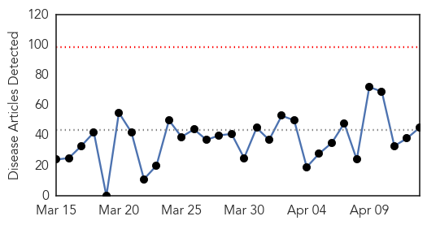
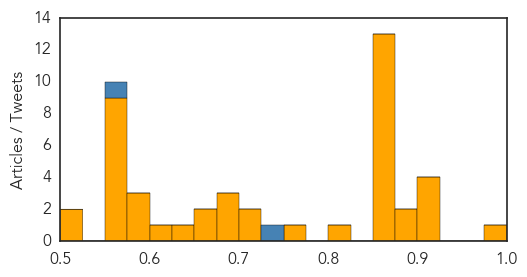

Yellow Fever
30-Day Web Trend
0 alerts, 0 warnings
30-Day Twitter Trend
0 alerts, 0 warnings

Article Locations

Article Confidences

Top Articles:
-
No articles found for Apr 13, 2014
Top Tweets:
-
No tweets found for Apr 13, 2014
Unknown
30-Day Web Trend
0 alerts, 0 warnings

30-Day Twitter Trend
0 alerts, 0 warnings

Article Locations
Article Confidences
Top Articles:
- 0.999
- One foreign health worker dies, five infected with MERS in UAE
- 0.917
- Chicago Tribune
- 0.917
- Chicago Tribune
- 0.917
- Chicago Tribune
- 0.917
- Chicago Tribune
- 0.900
- Get a shot to hold off the flu
- 0.899
- Porcine epidemic diarrhea virus: Death toll is mounting
- 0.870
- Germs' DNA decoded to fight food poisoning Republican American
- 0.866
- Destroyed houses are seen at the location where a forest fire burned several neighbourhoods in the hills in Valparaiso city, northwest of Santiago
- 0.866
- Firefighters walk past an area where a forest fire burned several neighbourhoods in the hills in Valparaiso city
- 0.866
- Soldiers in a truck patrol the location where a forest fire burned several neighbourhoods in the hills in Valparaiso city
- 0.866
- Residents inspect the remains of a car at the location where a forest fire burned several neighbourhoods in the hills in Valparaiso city
- 0.866
- Residents and rescue workers carry a body from the place where a forest fire burned several neighbourhoods in the hills in Valparaiso city
- 0.866
- Ukraine sets deadline for pro-Russian separatists to surrender
- 0.866
- Residents gather in a shelter after a forest fire burned several neighbourhoods in the hills of Valparaiso city
- 0.866
- Ukraine to launch 'full-scale' offensive involving army against rebels
- 0.866
- One pro-Russian activist killed in east Ukraine
- 0.866
- Separatist protesters seize mayor's office in another east Ukraine town
- 0.866
- Libya's Zawiya oil port reopens, refinery to restart in 24 hours
- 0.866
- Remaining cattle released to Nevada rancher after armed standoff -witness
- 0.818
- 112,000 chickens destroyed after bird flu outbreak
- 0.764
- KiiiTV.com South Texas, Corpus Christi, Coastal Bend
- 0.710
- Cruise departs despite apprehension over viral outbreak
- 0.701
- Return of bird flu sparks cull
- 0.686
- Japan orders chicken cull after bird flu outbreak
- 0.678
- 189,000 kids get anti-polio vaccine in Syria
- 0.678
- Japan orders chicken cull to contain bird flu
- 0.656
- Bird flu outbreak reported in Japan
- 0.653
- Cruise ship passengers sickened on luxury liners
- 0.634
- Bird flu outbreak reported in Japan
- 0.624
- Healthy Kids Center: Information on Children's Health
- 0.595
- Amref Health Africa - Legendary Organisation Gets a Brand New Name - Kenya
- 0.587
- ICRC Chief says additional funding is needed
- 0.584
- Hudson Valley Veterinarian Warns Against Leptospirosis Disease
- 0.551
- US Vice President Biden to travel to Ukraine in sign of support
- 0.551
- Pro-Russia activists defy Kiev's threats of ‘full-scale' offensive
- 0.551
- Libya PM quits after ‘armed attack’
- 0.551
- Thousands march in Paris against ‘right-wing’ Hollande
- 0.551
- French foreign minister makes historic visit to Havana
- 0.551
- Dozens killed in suspected Islamist attack in Nigeria
- 0.551
- Clashes in eastern Ukraine claim casualties on both sides
- 0.551
- Algerian president in rare appearance as election campaign ends
- 0.551
- Abdullah leads in tight Afghan presidential poll
- 0.514
- Virus has Wabash Valley pork producers on alert, worried
- 0.506
- Aviation: la Commission met à jour la liste des transporteurs aériens faisant l'objet d'une interdiction d'exploitation dans l'UE
Top Tweets:
- 0.726
- RT: Globally from Sept 2012 to date WHO has been informed of 228 lab-confirmed cases of Middle East respiratory syndrome incl 92 de…
- 0.565
- simply cuz there’s no effective treatment against MERS.